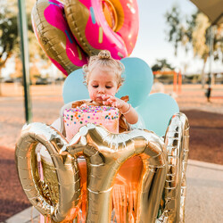

My name is Starr Uchytil and I have a passion for photography. If you were to ask my husband how much I love taking photos, he would say without a doubt that I am obsessed. I enjoy making sure people look the best they can and changing photos to look even better than in person. I can do all sorts of photoshoots and would love to give you ideas of what to do or where to go. However, I am also willing to accept any ideas or preferences you may have, and I will work around them.

I can assure you that you will not be disappointed in the photos I take, and I will always work with you to get your photos to look the way you want them to look. There is no other place you can go to get amazing pictures with such a low price. Most people do this mainly for money, but this is one of my favorite hobbies, which is why I don’t price it as much as others. Don’t delay this fantastic experience you could have. It is just one call away from having the best photos you will ever see of yourself.
Graduation
Engagement
Special Occasions
